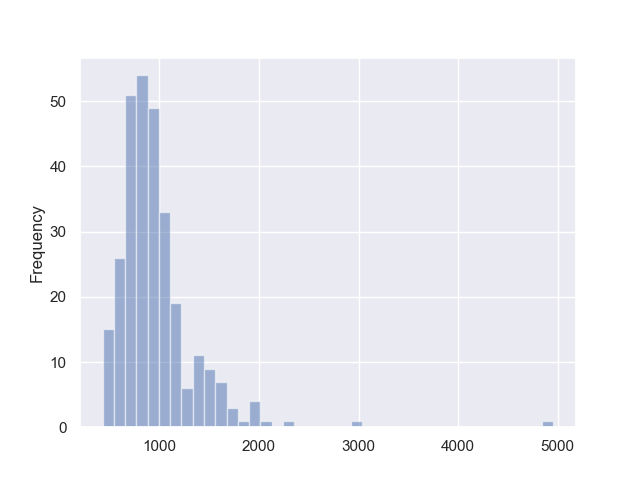
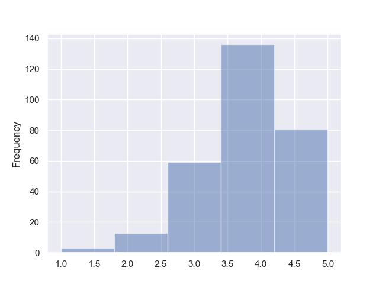
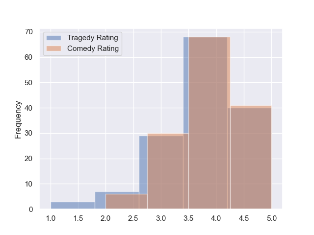
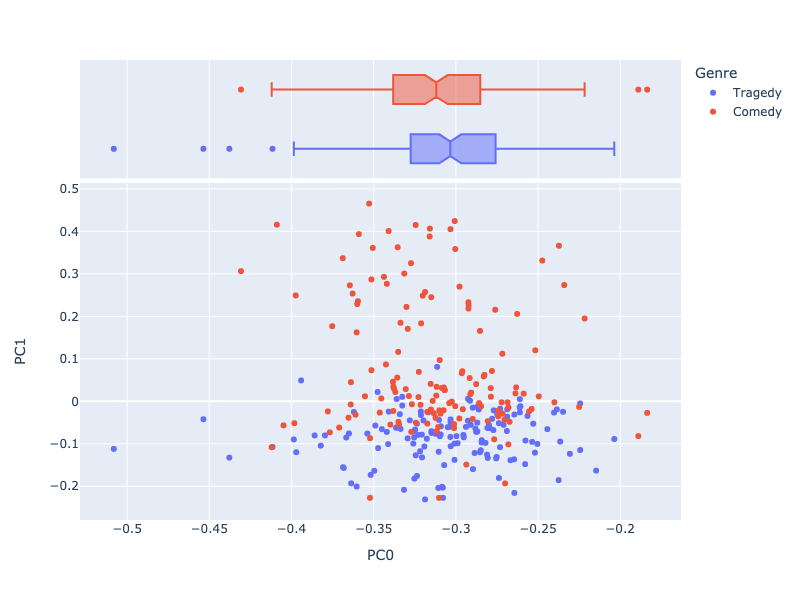

This is an individual project that I worked on during my time at UVA's Master's in Data Science program. This was arguably the most exciting project that I've done there, as it combined my two interests: statistical analysis and theatre.
Link to GitHub repository: Link
To-do's:
Add later
Theatrical performances are an art form that are expressed through rich, live storytelling. But how are those expressions received? What kind of discourse occurs from them? This project analyzes approximately 300 theatre performance reviews using Principle Component Analysis, Topic Models, Word Embeddings (word2vec) and Sentiment Analysis. Through these analyses, insights into theatrical performance reviews are uncovered.
The source data for this analysis was collected from the website https://www.playshakespeare.com/. This website describes itself as 'the best Shakespeare source for plays, news, reviews, and discussion' and contains, amongst other contents, reviews of theatrical performances based on the works of William Shakespeare.
As the website was not web-scraping friendly, the webpages containing the reviews were manually downloaded as HTML files. In total, there were 292 HTML files which were later parsed into more analysis-appropriate formats. The code developed to parse through the source files are stored in the parser.ipynb file. This file, along with the 292 HTML files, are available on the GitHub page for this project.
The distribution of Shakespeare's work that the reviewed performances were based on, along with their genre, are as follows:


The original works have an unequal distribution, but the genre is equally distributed within the corpus.
Below is a histogram of the word counts of each review, post-parsing:
From the histogram, it can be seen that most reviews are around 1000 words in length. The outliers, such as the review with approximately 5000 words, were reviews written by those who were more emotionally invested in the performance in question. If this work is to be revised, this outlier may be omitted from the data.
The tables generated through the analysis will be discussed here briefly. The finer details and the tables listed are available on the GitHub repository.
It should be noted that the CORPUS table has the indices review_id, sent_id, and token_id unlike OHCO, which is more commonly used. This is because the HTML format of the source documents made it impossible to separate paragraphs. In addition, most reviews had two or less paragraphs, suggesting that having the additional paragraph index would not be so helpful in the analysis.
In addition, the CORPUS table was filtered to exclude the names of characters present in Shakespeare's works. This was done to improve the results of the analyses, as the character names would be given a disproportionate level of importance due to their frequency.
The LIB table contains a few unique fields: Original Work, Overall Rating, Genre and Rating Category. The first two fields were extracted from the source file. Original Work refers to the Shakespeare work that the performance was based on, and contains values such as 'Twelfth Night' and 'MacBeth'. Overall Rating is a numerical variable containing integers from 1 to 5, with 1 as the lowest rating and 5 as the highest. The Overall Rating variable has a right-skewed distribution that looks like:
This distribution is shared amongst different genres:
The Rating Category variable was generated based on the Overall Rating variable. Reviews with Overall Rating values of 3 or less were given a Rating Category value of 'Negative', and those with Overall Rating values of 4 or higher were given a Rating Category value of 'Positive'.
The Genre variable was generated based on the Original Work variable and has the values 'Comedy' and 'Tragedy'. It is a categorical variable indicating the genre of the referenced Shakespeare's work.
Lastly, it should be noted that the VOCAB table had the field dfidf added onto itself during one of the analyses.
The tables below were generated through various text analysis methods employed in the analysis.ipynb file:
Here, the exploration of the corpus will be discussed. Each text analysis methods employed will be discussed in separate sections.
For this analysis, the VOCAB table was filtered down to the 1000 most important nouns as ranked by DFIDF. The filtered down VOCAB table was then used to produce a TFIDF table with review_id as the index.
With this TFIDF table and the hyperparameters k=10, norm_docs=True, center_by_mean=False,center_by_variance=False, three tables were created: the DCM table, the loadings table, and the compinf table. These three tables contain information on the principal components, either on word or document level.
In order to explore the corpus, visualizations were made based on the DCM table.
Below is a scatterplot of the reviews with PC0 and PC1 as the x-axis and y-axis respectively, with colors indicating the genre of the referenced Shakespeare play:
Not done yet, to be added...